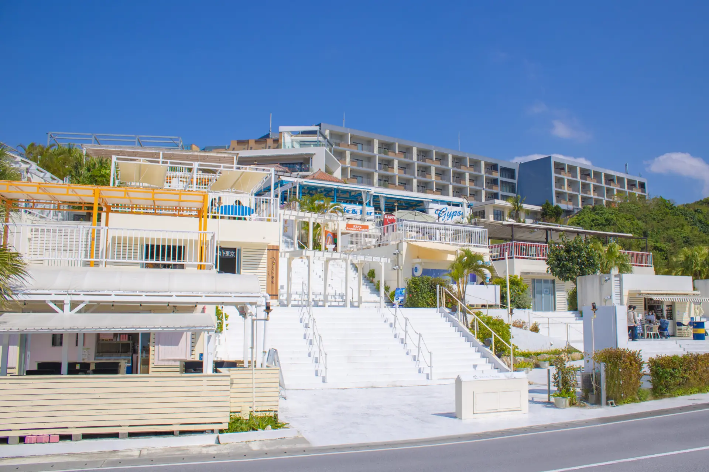
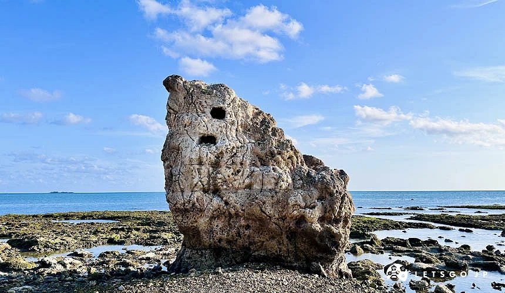
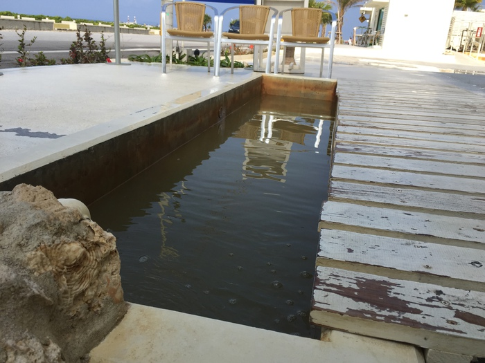
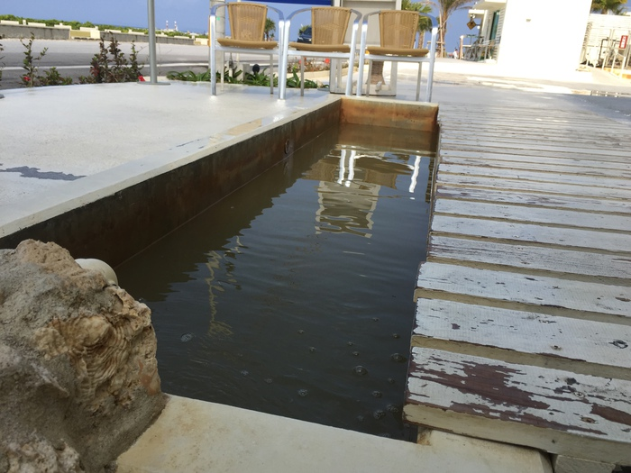
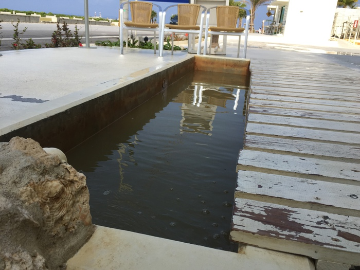
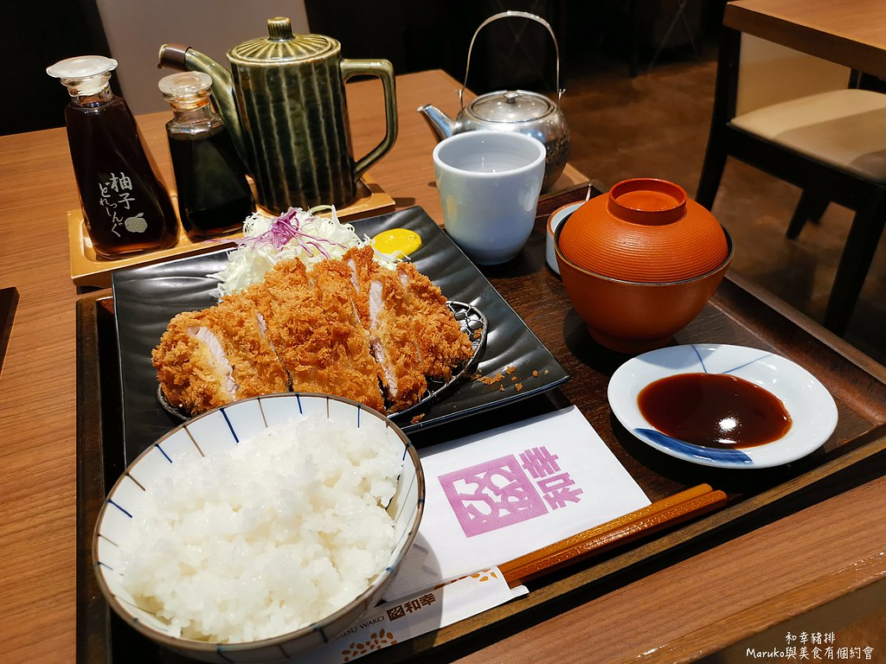
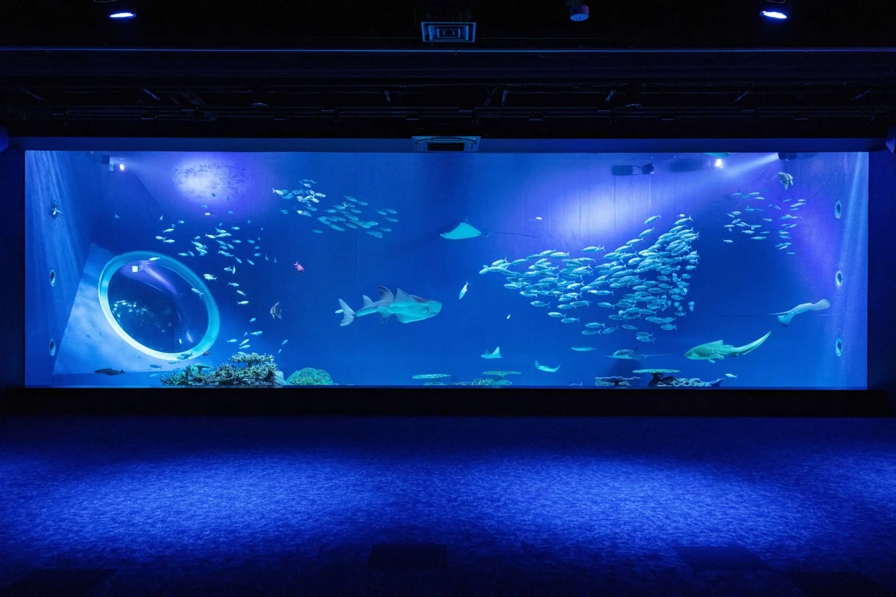
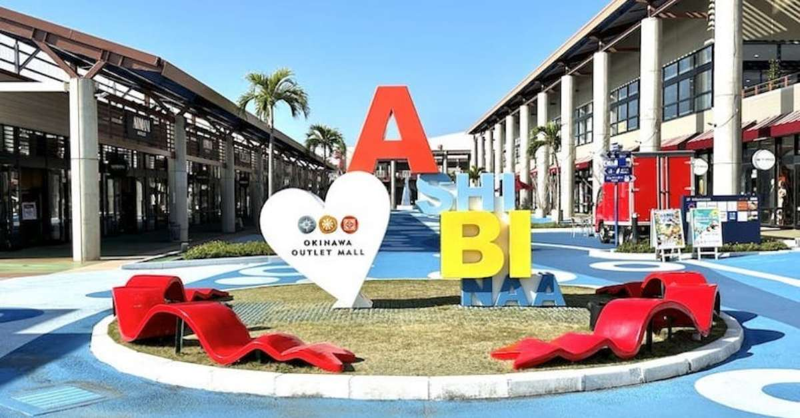
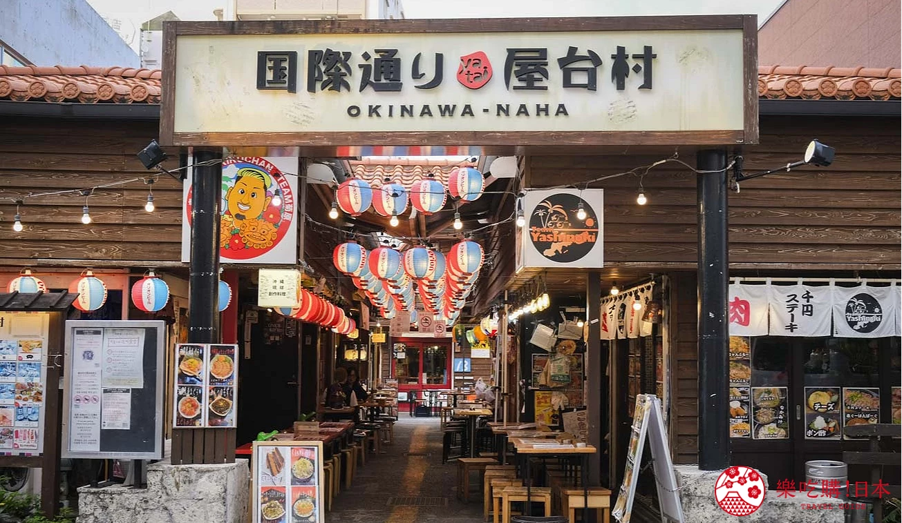
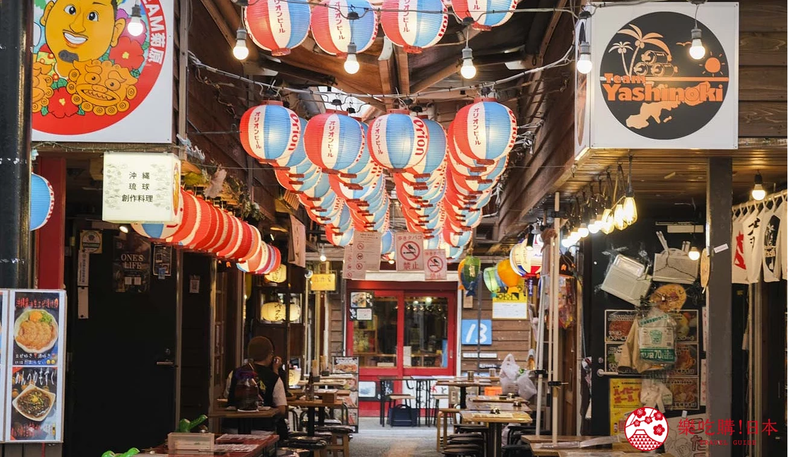

Day 2｜沖繩本島・那霸（08:00–18:00）
📍 最佳動線（不累、好拍、好逛）
➡ 港口 → 瀨長島 Umikaji Terrace → 午餐 → Ashibinaa Outlet → 國際通（輕鬆版）→ 回船
🚩 景點 1：瀨長島 Umikaji Terrace
白階層式海景商店街，可眺望機場跑道，是近年最受歡迎的輕旅行景點。下車即可拍照，長輩也能輕鬆漫步。
📸 景點內推薦拍照＆亮點位置
- 白色階梯式海景商店街（瀨長島象徵場景）
- 飛機起降觀景平台（小孩＆長輩都喜歡）
- 免費海景足湯（不走路也能享受的放鬆）
- LOVE／HEART 打卡裝置（情侶＆家庭必拍）
- 海天斜坡視角（最受歡迎的人像拍攝點）
- 子寶岩祈福點（隱藏景、寓意家庭幸福）


 


🕒 停留建議：60–90 分鐘
🚗 車程：港口 → 約 20 分鐘
🌧 雨天備案： AEON 那霸購物中心（室內、美食、休息座位多）
🍽 午餐建議（舒服、有座位、不踩雷）
四人同行、口味不同也安全，座位舒適、不需要等待，是最適合銜接後續行程的午餐選擇。


✅ 推薦 1：和幸炸豬排（全齡接受度最高）
- 餐點穩定、座位舒適、服務快速
- 長輩、小孩都覺得安心好入口
- 高麗菜與味噌湯可追加，CP 值高
🕒 建議用餐：50–70 分鐘
🚗 車程：瀨長島 → 約 12 分鐘
✅ 推薦 2：五穀定食（清爽、家庭友好）
- 口味清爽、不油膩，適合長輩與女性
- 白飯、味噌湯、配菜組合均衡
- 座位舒適、等待時間短
🕒 建議用餐：50–65 分鐘
🚗 車程：瀨長島 → 約 12 分鐘
✅ 推薦 3：大戶屋 Otoya（口味最輕盈）
- 健康取向，不油膩，長輩接受度高
- 座位多、環境安定，適合慢下來休息
- 可無縫接往 Outlet 或 DMM
🕒 建議用餐：50–65 分鐘
🚗 車程：瀨長島 → 約 12 分鐘
若臨時客滿，可改：
1. AEON 那霸美食街（最快、最多座位）
2. Tomiton 輕食區（就近不繞路）
3. 國際通下午再用餐（銜接順）
1. AEON 那霸美食街（最快、最多座位）
2. Tomiton 輕食區（就近不繞路）
3. 國際通下午再用餐（銜接順）
⭐ 分流行程（自由選擇，不會影響動線）


瀨長島之後可依興趣自由選擇，不需要全員同行。兩個地點相距不遠，
皆能接回國際通路線，是最不造成壓力的彈性安排。
🛍 選項 1：Ashibinaa Outlet（購物輕鬆逛）
- Coach／Nike／Adidas／Samantha 集中品牌
- 遮蔭多、休息容易、適合長輩
- 不需走太多路、不趕時間最舒服
🕒 停留建議：90–120 分鐘
🚗 車程：瀨長島 → 約 12 分鐘
🐠 選項 2：DMM Kariyushi 水族館（親子必訪）
- 沉浸式光影展示與海洋生物演出
- 小孩與家庭旅客評價最高
- 室內行程，陰雨天最佳替代方案
🕒 停留建議：90–120 分鐘
🚗 車程：瀨長島 → 約 13 分鐘
💡 建議提早購票可免排隊
🚩 景點 3：國際通（輕鬆版）
戰後復興象徵，被稱為「奇蹟一英里」。大量伴手禮、咖啡、藥妝集中於此，不需全程走完。
📸 景點內推薦拍照＆亮點位置
- 海天一線拍照區（最美藍色層次）
- 高架橋視角（沖繩特色構圖）
- 白色沙灘散步區（全齡適合）
- 海景休息座位（放鬆不耗體力）
- 夕陽觀景點（若停留較晚可遇見）


🕒 停留建議：45–60 分鐘
🚗 車程：Outlet → 約 20 分鐘
🌧 雨天備案： Don Quijote 驚安殿堂（可逛 1–2 小時）
🎁 必買伴手禮推薦
1. 雪鹽曲奇（全齡適合，不甜不膩）
2. 御菓子御殿紅芋塔（伴手禮經典）
3. 波照間黑糖（長輩最愛）
4. 海葡萄（回船前購買）
5. Orion 限定啤酒瓶身
6. 島辣椒油
7. A&W Root Beer & 小零食